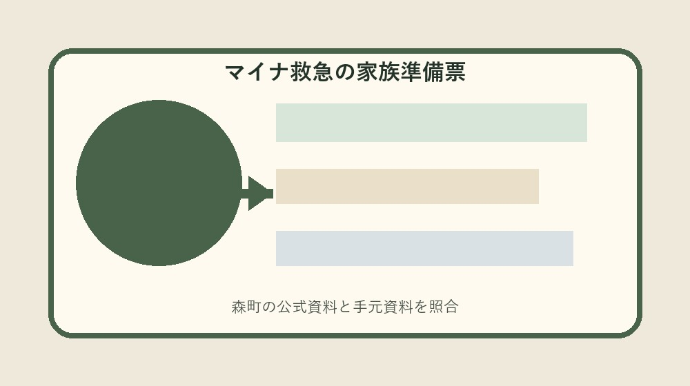
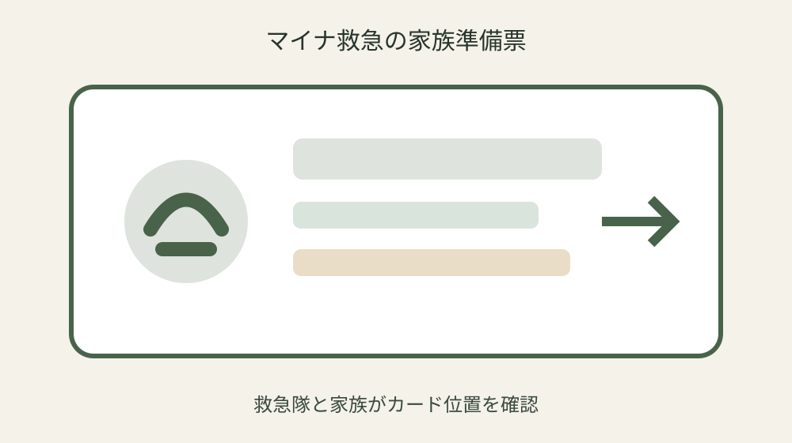
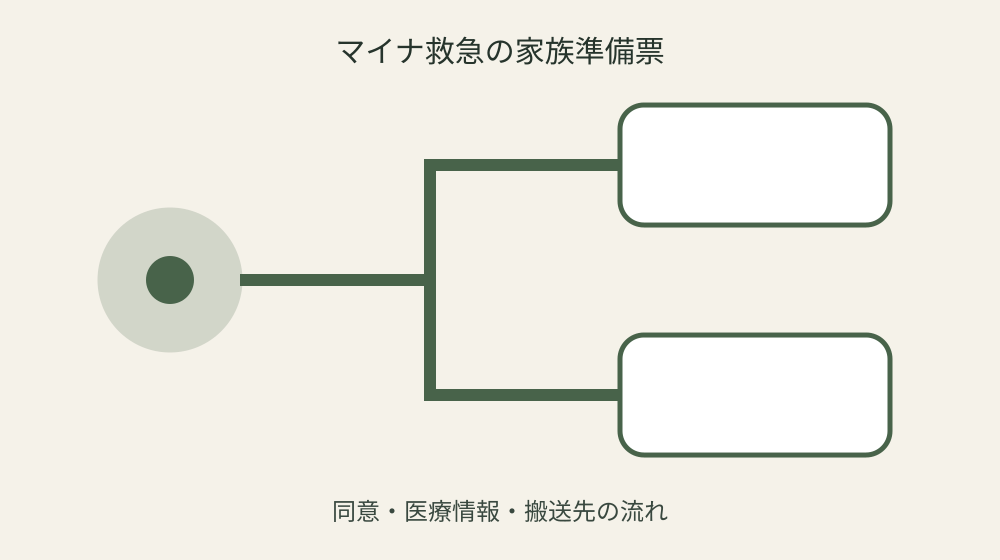

森町のマイナ救急｜救急隊へ渡すカードと同意範囲を家族で準備する

結論：マイナ救急準備票へ対象・基準日・手元資料・未確認事項を分け、最初の一問だけを森町へ確認します。マイナ保険証を救急搬送時の情報確認に活用を起点に、実行直前の再確認までを一続きにしてください。
119要請とカード探索を逆にしない
119要請とカード探索を逆にしないでは、まず「マイナ保険証を救急搬送時の情報確認に活用」という森町公式の条件を起点にします。マイナ救急準備票には対象、日付、資料名、確認日を別欄で置き、制度名だけのメモにしません。手元の現物と公式説明が食い違う場合は、都合のよい方へ寄せず、差がある状態をそのまま残します。
実際の確認は、現物を見る人、電話する人、記録する人を決めてから始めます。薬剤情報の確認に役立つも同じ行へ書き、カードがないと救急車を呼べないと思うことを避けます。数字や固有名は読み上げて照合し、不明欄には推定値ではなく「未確認」と次の確認先を記します。 この判断もマイナ救急準備票の更新対象です。
森町へ尋ねるときは「119要請とカード探索を逆にしないについて、手元ではここまで確認した」と一文で伝えます。そのうえでより適切な搬送先選定に役立てるが自分の案件にどう当てはまるかを一問だけ確認します。回答日、担当部署、再確認が必要な時期まで記録すれば、家族や同僚が同じ質問を繰り返さずに済みます。 この判断もマイナ救急準備票の更新対象です。
マイナ救急準備票の更新では旧版を消しません。生命・身体保護で同意困難時には例外があるを採用した根拠、変更前の記載、変更した日を並べます。公式ページの更新や個別事情で結論が変わることがあるため、実行直前に最新案内を見直し、確認できない場合は作業を一段止めます。
マイナ保険証の保管場所を決める
マイナ保険証の保管場所を決めるでは、まず「救急隊が傷病者の医療情報を確認する仕組み」という森町公式の条件を起点にします。マイナ救急準備票には対象、日付、資料名、確認日を別欄で置き、制度名だけのメモにしません。手元の現物と公式説明が食い違う場合は、都合のよい方へ寄せず、差がある状態をそのまま残します。
実際の確認は、現物を見る人、電話する人、記録する人を決めてから始めます。特定健診情報の確認に役立つも同じ行へ書き、暗証番号を家族共有することを避けます。数字や固有名は読み上げて照合し、不明欄には推定値ではなく「未確認」と次の確認先を記します。 この判断もマイナ救急準備票の更新対象です。
森町へ尋ねるときは「マイナ保険証の保管場所を決めるについて、手元ではここまで確認した」と一文で伝えます。そのうえで救急搬送中の処置判断に役立てるが自分の案件にどう当てはまるかを一問だけ確認します。回答日、担当部署、再確認が必要な時期まで記録すれば、家族や同僚が同じ質問を繰り返さずに済みます。 この判断もマイナ救急準備票の更新対象です。
マイナ救急準備票の更新では旧版を消しません。マイナ保険証の携行が準備になるを採用した根拠、変更前の記載、変更した日を並べます。公式ページの更新や個別事情で結論が変わることがあるため、実行直前に最新案内を見直し、確認できない場合は作業を一段止めます。
家族が暗証番号を聞き出さない
家族が暗証番号を聞き出さないでは、まず「受診歴の確認に役立つ」という森町公式の条件を起点にします。マイナ救急準備票には対象、日付、資料名、確認日を別欄で置き、制度名だけのメモにしません。手元の現物と公式説明が食い違う場合は、都合のよい方へ寄せず、差がある状態をそのまま残します。
実際の確認は、現物を見る人、電話する人、記録する人を決めてから始めます。本人が説明しにくい状況で情報把握を支援も同じ行へ書き、閲覧情報が全医療記録と思うことを避けます。数字や固有名は読み上げて照合し、不明欄には推定値ではなく「未確認」と次の確認先を記します。 この判断もマイナ救急準備票の更新対象です。
森町へ尋ねるときは「家族が暗証番号を聞き出さないについて、手元ではここまで確認した」と一文で伝えます。そのうえで利用時は原則本人の同意を確認が自分の案件にどう当てはまるかを一問だけ確認します。回答日、担当部署、再確認が必要な時期まで記録すれば、家族や同僚が同じ質問を繰り返さずに済みます。 この判断もマイナ救急準備票の更新対象です。
マイナ救急準備票の更新では旧版を消しません。マイナ保険証がなくても救急要請はできるを採用した根拠、変更前の記載、変更した日を並べます。公式ページの更新や個別事情で結論が変わることがあるため、実行直前に最新案内を見直し、確認できない場合は作業を一段止めます。
受診歴と服薬メモも併用する
受診歴と服薬メモも併用するでは、まず「薬剤情報の確認に役立つ」という森町公式の条件を起点にします。マイナ救急準備票には対象、日付、資料名、確認日を別欄で置き、制度名だけのメモにしません。手元の現物と公式説明が食い違う場合は、都合のよい方へ寄せず、差がある状態をそのまま残します。
実際の確認は、現物を見る人、電話する人、記録する人を決めてから始めます。より適切な搬送先選定に役立てるも同じ行へ書き、カードがないと救急車を呼べないと思うことを避けます。数字や固有名は読み上げて照合し、不明欄には推定値ではなく「未確認」と次の確認先を記します。 この判断もマイナ救急準備票の更新対象です。
森町へ尋ねるときは「受診歴と服薬メモも併用するについて、手元ではここまで確認した」と一文で伝えます。そのうえで生命・身体保護で同意困難時には例外があるが自分の案件にどう当てはまるかを一問だけ確認します。回答日、担当部署、再確認が必要な時期まで記録すれば、家族や同僚が同じ質問を繰り返さずに済みます。 この判断もマイナ救急準備票の更新対象です。
マイナ救急準備票の更新では旧版を消しません。マイナ保険証を救急搬送時の情報確認に活用を採用した根拠、変更前の記載、変更した日を並べます。公式ページの更新や個別事情で結論が変わることがあるため、実行直前に最新案内を見直し、確認できない場合は作業を一段止めます。

同意できる時の意思を話しておく
同意できる時の意思を話しておくでは、まず「特定健診情報の確認に役立つ」という森町公式の条件を起点にします。マイナ救急準備票には対象、日付、資料名、確認日を別欄で置き、制度名だけのメモにしません。手元の現物と公式説明が食い違う場合は、都合のよい方へ寄せず、差がある状態をそのまま残します。
実際の確認は、現物を見る人、電話する人、記録する人を決めてから始めます。救急搬送中の処置判断に役立てるも同じ行へ書き、暗証番号を家族共有することを避けます。数字や固有名は読み上げて照合し、不明欄には推定値ではなく「未確認」と次の確認先を記します。 この判断もマイナ救急準備票の更新対象です。
森町へ尋ねるときは「同意できる時の意思を話しておくについて、手元ではここまで確認した」と一文で伝えます。そのうえでマイナ保険証の携行が準備になるが自分の案件にどう当てはまるかを一問だけ確認します。回答日、担当部署、再確認が必要な時期まで記録すれば、家族や同僚が同じ質問を繰り返さずに済みます。 この判断もマイナ救急準備票の更新対象です。
マイナ救急準備票の更新では旧版を消しません。救急隊が傷病者の医療情報を確認する仕組みを採用した根拠、変更前の記載、変更した日を並べます。公式ページの更新や個別事情で結論が変わることがあるため、実行直前に最新案内を見直し、確認できない場合は作業を一段止めます。
意識がない時の例外を理解する
意識がない時の例外を理解するでは、まず「本人が説明しにくい状況で情報把握を支援」という森町公式の条件を起点にします。マイナ救急準備票には対象、日付、資料名、確認日を別欄で置き、制度名だけのメモにしません。手元の現物と公式説明が食い違う場合は、都合のよい方へ寄せず、差がある状態をそのまま残します。
実際の確認は、現物を見る人、電話する人、記録する人を決めてから始めます。利用時は原則本人の同意を確認も同じ行へ書き、閲覧情報が全医療記録と思うことを避けます。数字や固有名は読み上げて照合し、不明欄には推定値ではなく「未確認」と次の確認先を記します。 この判断もマイナ救急準備票の更新対象です。
森町へ尋ねるときは「意識がない時の例外を理解するについて、手元ではここまで確認した」と一文で伝えます。そのうえでマイナ保険証がなくても救急要請はできるが自分の案件にどう当てはまるかを一問だけ確認します。回答日、担当部署、再確認が必要な時期まで記録すれば、家族や同僚が同じ質問を繰り返さずに済みます。 この判断もマイナ救急準備票の更新対象です。
マイナ救急準備票の更新では旧版を消しません。受診歴の確認に役立つを採用した根拠、変更前の記載、変更した日を並べます。公式ページの更新や個別事情で結論が変わることがあるため、実行直前に最新案内を見直し、確認できない場合は作業を一段止めます。
救急隊へ住居内の場所を伝える
救急隊へ住居内の場所を伝えるでは、まず「より適切な搬送先選定に役立てる」という森町公式の条件を起点にします。マイナ救急準備票には対象、日付、資料名、確認日を別欄で置き、制度名だけのメモにしません。手元の現物と公式説明が食い違う場合は、都合のよい方へ寄せず、差がある状態をそのまま残します。
実際の確認は、現物を見る人、電話する人、記録する人を決めてから始めます。生命・身体保護で同意困難時には例外があるも同じ行へ書き、カードがないと救急車を呼べないと思うことを避けます。数字や固有名は読み上げて照合し、不明欄には推定値ではなく「未確認」と次の確認先を記します。 この判断もマイナ救急準備票の更新対象です。
森町へ尋ねるときは「救急隊へ住居内の場所を伝えるについて、手元ではここまで確認した」と一文で伝えます。そのうえでマイナ保険証を救急搬送時の情報確認に活用が自分の案件にどう当てはまるかを一問だけ確認します。回答日、担当部署、再確認が必要な時期まで記録すれば、家族や同僚が同じ質問を繰り返さずに済みます。 この判断もマイナ救急準備票の更新対象です。
マイナ救急準備票の更新では旧版を消しません。薬剤情報の確認に役立つを採用した根拠、変更前の記載、変更した日を並べます。公式ページの更新や個別事情で結論が変わることがあるため、実行直前に最新案内を見直し、確認できない場合は作業を一段止めます。

搬送後に返却物を確認する
搬送後に返却物を確認するでは、まず「救急搬送中の処置判断に役立てる」という森町公式の条件を起点にします。マイナ救急準備票には対象、日付、資料名、確認日を別欄で置き、制度名だけのメモにしません。手元の現物と公式説明が食い違う場合は、都合のよい方へ寄せず、差がある状態をそのまま残します。
実際の確認は、現物を見る人、電話する人、記録する人を決めてから始めます。マイナ保険証の携行が準備になるも同じ行へ書き、暗証番号を家族共有することを避けます。数字や固有名は読み上げて照合し、不明欄には推定値ではなく「未確認」と次の確認先を記します。 この判断もマイナ救急準備票の更新対象です。
森町へ尋ねるときは「搬送後に返却物を確認するについて、手元ではここまで確認した」と一文で伝えます。そのうえで救急隊が傷病者の医療情報を確認する仕組みが自分の案件にどう当てはまるかを一問だけ確認します。回答日、担当部署、再確認が必要な時期まで記録すれば、家族や同僚が同じ質問を繰り返さずに済みます。 この判断もマイナ救急準備票の更新対象です。
マイナ救急準備票の更新では旧版を消しません。特定健診情報の確認に役立つを採用した根拠、変更前の記載、変更した日を並べます。公式ページの更新や個別事情で結論が変わることがあるため、実行直前に最新案内を見直し、確認できない場合は作業を一段止めます。
良い点
マイナ救急準備票に確認済み事実と未確認事項を分けると、制度の対象外を恐れて何もしない状態から、次の一問を決める状態へ進めます。
受診歴の確認に役立つという具体条件を家族で共有でき、担当が替わっても根拠をたどれます。
期限、現物、回答日が一枚に集まり、書類の取り直しと問い合わせの重複を減らせます。
公式資料だけで断定できない個別条件を未確認として残せることも、この方法の利点です。
注文したい点
森町の案内には制度条件が整理されていますが、初めて手続きをする人には、個別案件の順番が読み取りにくい部分があります。
カードがないと救急車を呼べないと思うことを避けるため、記入例や受付後の流れも同じページから確認できるとさらに使いやすくなります。
年度更新時には変更箇所と変更日が目立つ表示になると、保存した旧資料との取り違えを減らせます。
これは現行制度の否定ではなく、利用者が正しい窓口へ一度で到達するための改善要望です。
対案・結論
結論は、マイナ救急準備票を今日一枚作り、最初の未確認欄だけを森町へ尋ねることです。
全条件を一度に覚えず、公式事実、手元資料、窓口回答、次の期限を四列に分けます。
特定健診情報の確認に役立つを確認しても、個別可否は案件ごとに変わり得るため、支出や申請の直前に再確認します。
確認が終わったら旧版を残し、次回の担当が同じ根拠から続けられる状態を完成とします。
大石の視点
ここまでの制度条件は森町公式資料から確認した事実です。以下は私、大石浩之の実務提案であり、森町の公式見解ではありません。
私はマイナ救急準備票を紙一枚から始め、原本を動かさず、写真や写しへ番号を付ける方法を勧めます。
未確認欄は失敗ではありません。確認先と期限のある空欄は、根拠のない推測より実用的です。
個人情報を含む場合は内部保管版と提出版を分け、必要な範囲だけを相手へ渡してください。
よくある質問
マイナ救急準備票は何から始めますか。
対象者または対象物、基準日、手元資料を一行にし、最初の公式条件「マイナ保険証を救急搬送時の情報確認に活用」と照合します。
資料が足りなくてもマイナ救急準備票を作れますか。
作れます。不足欄を推測で埋めず、必要資料、確認先、期限を書けば、後から安全に再開できます。
公式ページを一度保存すれば十分ですか。
十分ではありません。救急隊が傷病者の医療情報を確認する仕組みなどの条件は更新される場合があるため、実行直前に現行ページを確認します。
家族や担当者へ渡すとき何を添えますか。
確認済み事実、未確認事項、次の担当、期限、原本保管場所、町へ尋ねた日と回答を添えます。
公式情報源
- マイナ救急がはじまります（2026年8月20日確認）
- 救急の案内（2026年8月20日確認）
最終確認日：2026-08-20 ／ 公表事実と執筆者の解釈・意見を分けて記載しています。